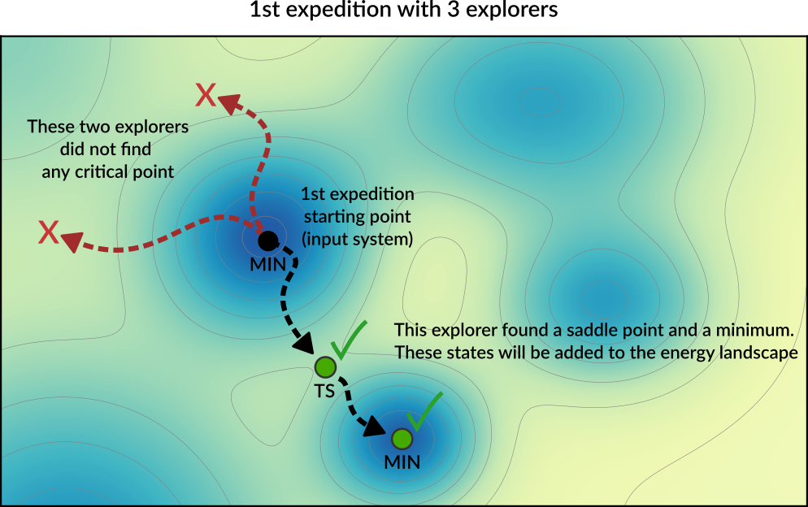
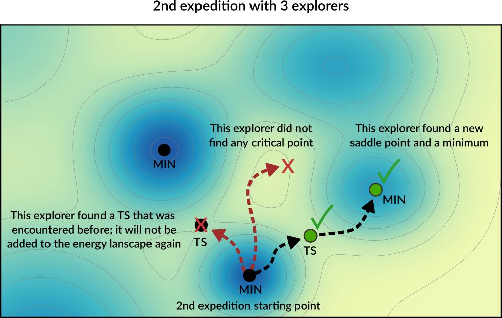
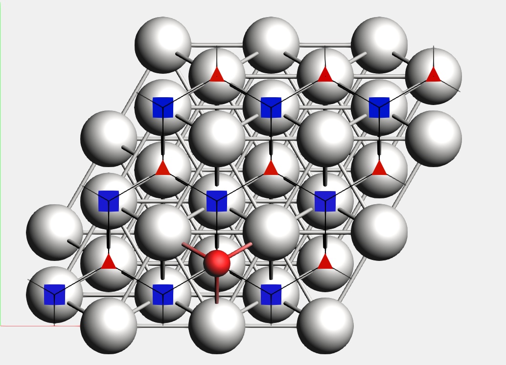

Automated PES Exploration¶
In chemistry and materials science, two types of Potential Energy Surface (PES) critical points are of particular interest: local minima and (first-order) saddle points.
The PESExploration task consists of a set of algorithms (which we will refer to as jobs) that will automatically explore the PES of a given system, looking for local minima and saddle points.
The available PES exploration jobs are:
- Process Search
- A composite method for finding escape mechanisms from a state. This will find both local minima and saddle points.
- Basin Hopping
- A Monte Carlo method for finding local minima.
- Saddle Search
- A single-ended method for finding nearby saddle points.
- Landscape Refinement
- Given a pre-calculated Energy Landscape, re-optimize local minima and saddle points using a different computational engine/settings.
- Binding Sites
- Given a pre-calculated Energy Landscape, compute the binding sites.
The AMS driver links to the client program of the EON software package [1] and uses its implementation of the dimer method. EON is developed by the University of Texas at Austin and the University of Iceland. See also the Required citations section.
See also
- PES Exploration GUI tutorials:
- Examples:
Overview¶
While many details of a PES exploration calculation depend on the specific job selected, some aspects are common to all PES explorations jobs. Here we give a brief overview of a typical PES exploration, using a Process Search job as example.
A PES exploration calculation generally consists of multiple expeditions, each with several explorers.
Explorers are given an initial structure, and their goal is to find a nearby critical point (a local minimum, a saddle point or both). The explorer moves around the PES by modifying the atomic positions of the system and by using the specified Engine to compute energy and gradients.
An expedition is a collection of explorers all starting from the same point on the PES.
Before setting off for the first expedition, the input structure is optimized and added to the Energy Landscape, which is the database of all interesting points found during the exploration (see the section Results: the “Energy Landscape” for more details).
Starting from this initial structure, a number of PES explorers (3 in the diagram below) will set off in random directions exploring the potential energy surface and looking for nearby critical points.
{kind=link}
Explorers have “stop conditions” (e.g. a maximum number of steps or a maximum energy above the starting point) so in general not all explorers will successfully find a critical point. In this case, only one of the explorers found relevant critical points: a saddle point and a local minimum. These newly found critical points are added to the Energy Landscape.
After the first expedition is over, the program will start with the second expedition. The starting point for the next expedition will be a randomly chosen local minimum from the list of minima present in the Energy Landscape (the possible starting points for an exploration are called seed states. See also the DynamicSeedStates option).
In this example, the starting point of the second expedition is the new local minimum found during the first expedition. A new set of explorers will set off in random directions from this point.
{kind=link}
In the diagram above, one of the explorer found a saddle point that was already found in a previous exploration. This structure will not be added to Energy Landscape since it was already seen before (see the Structure comparison section for more details). The newly found critical points are added to the Energy Landscape.
Usually, many expeditions and/or many explorers are needed to map the PES, but you should keep in mind that the computation time of the calculation will roughly be proportional to the product NumExpeditions x NumExplorers.
By having many explorers you will have a higher chance of comprehensively mapping the PES near the starting point of each expedition. By having many expeditions, you will have a higher chance of traveling further away from the initial structure.
It should be emphasized that the PES exploration task is stochastic in nature, as it uses random numbers to perform initial-displacements. This means that if you run the same calculation twice you might find different critical points.
Job selection and main options¶
To use one of the PES Exploration procedures you should set the Task to PESExploration and specify one of the jobs in the PESExploration%Job key:
Task PESExploration
PESExploration
Job [ProcessSearch | BasinHopping | SaddleSearch | LandscapeRefinement | BindingSites]
End
The input options for the various jobs are described in the corresponding sections: Process Search, Basin Hopping, Saddle Search, Landscape Refinement, Binding Sites.
It is then important pick an appropriate number of expeditions and explorers. Having many expeditions and explorers will result in a more comprehensive PES exploration, but since the computation time will roughly be proportional to the product NumExpeditions x NumExplorers you’ll need to find an appropriate balance.
PESExploration
NumExpeditions integer
NumExplorers integer
DynamicSeedStates Yes/No
End
PESExplorationType: Block Description: Configures details of the automated PES exploration methods. NumExpeditionsType: Integer Default value: 1 Description: Sets the number of subsequent expeditions our job will consist of. Larger values result in a more comprehensive exploration of the potential energy surface, but will take more computational time. NumExplorersType: Integer Default value: 1 Description: Sets the number of independent PES explorers dispatched as part of each expedition. Larger values will result in a more comprehensive exploration of the potential energy surface, but will take more computational time. By default an appropriate number of explorers are executed in parallel. DynamicSeedStatesType: Bool Default value: Yes Description: Whether subsequent expeditions may start from states discovered by previous expeditions. This should lead to a more comprehensive exploration of the potential energy surface. Disabling this will focus the PES exploration around the initial seed states.
The following miscellaneous input option generally apply to most PES exploration calculations:
PESExploration
WriteHistory [None | Converged | All]
Temperature float
FiniteDifference float
End
PESExplorationType: Block Description: Configures details of the automated PES exploration methods. WriteHistoryType: Multiple Choice Default value: Converged Options: [None, Converged, All] Description: When to write the molecular geometry (and possibly other properties) to the history on the ams.rkf file. The default is to only write the converged geometries to the history. Can be changed to write no frames at all to the history, or write all frames (should only be used when testing because of the performance impact). Note that for parallel calculations, only the first group of processes writes to ams.rkf. TemperatureType: Float Default value: 300.0 Unit: Kelvin Description: The temperature that the job will run at. This may be used in different ways depending on the job, e.g. acceptance probabilities for Monte-Carlo based jobs, thermostatting for dynamics based jobs, kinetic prefactors for jobs that find transition states. Some jobs may not use this temperature at all. FiniteDifferenceType: Float Default value: 0.01 Unit: Angstrom Description: The finite difference distance to use for Dimer, Hessian, Lanczos, and optimization methods.
Results: the “Energy Landscape”¶
The results of a PES Exploration are the structures and energies of the critical points found. There are multiple ways for you to inspect the results:
- The energy landscape can be visualized using the
AMSMovieGUI module (In AMSMovie:File → Openand select theams.rkffile of your calculation). See the GUI tutorials (e.g. Automated reaction pathway discovery for hydrohalogenation) for more details. - The results are printed to the text output under the header
Final Energy Landscape, see below. - The results are stored on the
ams.rkfbinary results file in the sectionEnergyLandscape - In PLAMS, you can use the get_energy_landscape method of the
AMSResultsobject to conveniently extract the results.
Results on the text output¶
These are printed at the end of the text output under the header Final Energy Landscape. Here is an output example for a ProcessSearch job for the simple HCN molecule (computed with the DFTB engine):
----------------------
Final Energy Landscape
----------------------
Id Energy(a.u.) RE(eV) RE(kcal/mol) Counts Crit. point
--------------------------------------------------------------------------------
1 -5.782789 0.00000 0.0000 4 Min
2 -5.748792 0.92510 21.3334 4 Min
3 -5.689025 2.55143 58.8375 4 TS 1 <--> 2
Number of configurations 3
Number of local minima 2
Number of transition states 1
Energy range (a.u.) 0.093763
Energy range (eV) 2.55143
Energy range (kcal/mol) 58.8375
Configurations
--------------
3
Id 1 Energy(hartree) -5.78278852 isTS=False
H -5.05604362312999 1.04394551246415 0.36836337958238
C -4.06812264817497 0.95005534859126 -0.01533183100739
N -3.00601476684712 0.84907755770632 -0.42810754191928
3
Id 2 Energy(hartree) -5.74879169 isTS=False
H -4.01886309319822 1.09046314142766 1.01610923624838
C -4.06910389782095 0.79751242545583 -1.12016730790896
N -4.04221404713293 0.95510285187825 0.02898207831626
3
Id 3 Energy(hartree) -5.68902502 isTS=True
H -4.51488871821561 1.04261603660424 0.52096081259126
C -4.32990923520194 0.88203060069718 -0.58636688911847
N -3.28538308473452 0.91843178146029 -0.00966991681712
From this you can see that 3 critical points were found: 2 minima (Id 1 and Id 2) and 1 transition state (Id 3) connecting the first two states (indicated by 1 <--> 2).
Under Counts you can see how many times each state was encountered during the exploration (often the same state is found multiple times) See the Structure comparison section for more details on how states are compared.
RE is the “relative energy” with respect to the lowest-energy state found.
Under the header Configurations you will find the XYZ geometries (in Angstrom) corresponding to the various critical points.
Continue a PES exploration from a previous calculation¶
You can load an Energy Landscape obtained from PES exploration calculation and use it as starting point for a new PES exploration. In this way you can extend your Energy Landscape, and potentially use different PES exploration algorithms.
To load a previously computed energy landscape, use the PESExploration%LoadEnergyLandscape%Path option (note: you should still provide an input system in the System block even if you are loading a previous Energy Landscape. The input system will be optimized and added to the energy landscape as a minimum).
It is often convenient to load only some of the states from a previous calculation; this can be done via the Remove or KeepOnly input options. Specify the seed states with the SeedStates option.
These are all the input options related to the loading an Energy Landscape:
PESExploration
LoadEnergyLandscape
KeepOnly integer_list
Path string
Remove integer_list
SeedStates integer_list
End
End
PESExplorationLoadEnergyLandscapeType: Block Description: Options related to the loading of an Energy Landscape from a previous calculation. KeepOnlyType: Integer List GUI name: List of states to keep Description: Upon loading the Energy Landscape, only keep the states specified here. The states should be specified via a list of integers referring to the indices of the states you want to keep. PathType: String GUI name: Load energy landscape from Description: The path to load an energy landscape from. Accepts either AMS result folders, or .confiles in the native EON format (only available through the text input file).RemoveType: Integer List GUI name: List of states to remove Description: Upon loading the Energy Landscape, remove (i.e. do not load) the states specified here. The states should be specified via a list of integers referring to the indices of the states you want to remove (i.e. the states you don’t want to load). SeedStatesType: Integer List GUI name: List of seed states Description: By default when you start a new PES Exploration from a loaded Energy Landscape, expeditions can start from any of the loaded minima. By using this input option, you can instruct the program to only use some of the states as ‘expedition starting point’. The states that serve as ‘expedition starting points’ should be specified via a list of integers referring to the indices of the states.
Troubleshooting¶
The PES exploration in AMS is quite sensitive to noise on the potential energy surface. A too noisy PES may result in bad convergence of the individual explorers, or states being rejected because their PES point character is not the expected one.
In case of problems we therefore advise to set engine options that result in a smoother PES.
Often this can be accomplished by setting the NumericalQuality keyword in the engine input.
Especially the ReaxFF engine has a rather noisy PES by default, which may cause problems in a PES exploration job. Please refer to the ReaxFF manual for advice on how to smoothen the ReaxFF potential energy surface:
Structure comparison¶
During a PES exploration some critical points will most likely be encountered more than once.
Whenever a critical point is found, the program will ask itself: is this a new structure, or have I already encountered this before? If the structure was not seen before (i.e. it’s a novel configuration), it will be added to the list of structures found during the exploration. If the structure was already found before, the program will simply increase a counter keeping track of how many times a specific structure was found during the PES exploration.
When deciding if two structures are the same or not, the program will compare both the geometry and the energy of the two configurations. Several parameters and thresholds can be tweaked in the PESExploration%StructureComparison block to tell AMS under which conditions two systems should be considered equal.
PESExploration
StructureComparison
CheckRotation Yes/No
CheckSymmetry Yes/No
DistanceDifference float
EnergyDifference float
IndistinguishableAtoms Yes/No
NeighborCutoff float
RemoveTranslation Yes/No
End
End
PESExplorationStructureComparisonType: Block Description: Settings for structure comparison. CheckRotationType: Bool Description: Rotates the system optimally before comparing structures. The default is to do this only for molecular systems when there are no fixed atom constraints. CheckSymmetryType: Bool Default value: No Description: Considers that two systems are equal if they are equivalent by symmetry. DistanceDifferenceType: Float Default value: 0.1 Unit: Angstrom Description: If the distance between two mapped atoms is larger than this threshold, the two configurations are considered different structures. EnergyDifferenceType: Float Default value: 0.01 Unit: eV Description: If the energy difference between two configurations is larger than this threshold, the two configurations are considered to be different structures. IndistinguishableAtomsType: Bool Default value: Yes Description: If yes, the order of the atoms does not affect the structural comparison. Atoms of the same element are then indistinguishable. NeighborCutoffType: Float Default value: 3.3 Unit: Angstrom Description: Atoms within this distance of each other are considered neighbors. RemoveTranslationType: Bool Description: Translates the system optimally before comparing structures. The default is to do this only when there are no fixed atom constraints.
Process Search job¶
Overview¶
Process Search is a composite method for finding escape mechanisms from a state. Each PES explorer will perform the following steps:
- Starting from a minimum, a SaddleSearch calculation is performed to find a nearby saddle point
- If a saddle point is found, two images are placed on either side of the saddle along the min mode.
- The two images are then minimized; one of the images is expected to fall back into the original minimum, while the other image is expected to end up in the product state on the other side of the saddle. If this is case, the product, TS and reactant states are added to the energy landscape.
The Process Search procedure will therefore not only find minima and saddle points, but it will also keep track of which minima each saddle point is connecting.
See also
Input options¶
To perform a Process Search calculation you should specify:
Task PESExploration
PESExploration
Job ProcessSearch
ProcessSearch
# Options for the Process Search procedure. See description below.
End
SaddleSearch
# Options for the Saddle Search part of the Process Search procedure.
End
End
The options for the saddle search part of a Process Search job are described in the SaddleSearch section.
Options specific to the Process Search procedure can be specified in the PESExploration%ProcessSearch block:
PESExploration
ProcessSearch
MinimizationOffset float
End
End
PESExplorationProcessSearchType: Block Description: Input options specific to the process search procedure. MinimizationOffsetType: Float Default value: 0.2 Description: After a saddle is found, images are placed on either side of the saddle along the mode and minimized to ensure that the saddle is connected to the original minimum and to locate the product state. MinimizationOffset is the distance those images are displaced from the saddle.
Saddle Search job¶
Overview¶
Saddle Search is a single-ended method for finding nearby saddle points.
In a Saddle Search calculation, each PES explorer starts by performing a random displacement from the initial geometry (or seed state). Then, starting from this point, the explorer searches for a nearby saddle point using a minimum-mode following method (the available min-mode following methods are dimer [3] [4] [5] and Lanczos [6]).
If you already know which atoms are likely to be involved in the reactions, you can use the DisplaceAtomsInRegion option to nudge the Saddle Search procedure towards the right part of the PES (regions can be specified in the system input block, or via the “Model → Regions” panel in AMSinput).
Input options¶
To perform a Saddle Search calculation you should specify:
Task PESExploration
PESExploration
Job SaddleSearch
SaddleSearch
# Options for the Saddle Search procedure. See description below.
End
End
Options for the Saddle Search procedure can be specified in the PESExploration%SaddleSearch block.
Note: these options also affect the Saddle Search part of Process Search Jobs.
PESExploration
SaddleSearch
ConvergedForce float
DisplaceAtomsInRegion string
DisplaceMagnitude float
MaxEnergy float
MaxIterations integer
MinEnergyBarrier float
MinModeMethod [dimer | lanczos]
End
End
PESExplorationSaddleSearchType: Block Description: Configuration for the Saddle Search procedure (used in SaddleSearch and ProcessSearch Jobs). ConvergedForceType: Float Default value: -1.0 Unit: eV/Angstrom Description: Convergence threshold for nuclear gradients. Note: Special value of -1.0 means using the same convergence criterion as the PES explorer’s geometry optimizer. DisplaceAtomsInRegionType: String Default value: Description: A string corresponding to the name of a region. When performing the initial random displacement, only displace atoms in the specified region. This can help the Saddle Search procedure to start off in a desired region of the PES. DisplaceMagnitudeType: Float Default value: 0.1 Unit: Angstrom Description: The standard deviation of the Gaussian displacement in each degree of freedom for the selected atoms. MaxEnergyType: Float Default value: 20.0 Unit: eV Description: The energy (relative to the starting point of the saddle search) at which a saddle search explorer considers the search bad and terminates it. MaxIterationsType: Integer Default value: 400 Description: Maximum number of iterations for each saddle search run. MinEnergyBarrierType: Float Default value: 0.0 Unit: eV Description: Minimum energy barrier to accept a new transition state. MinModeMethodType: Multiple Choice Default value: dimer Options: [dimer, lanczos] Description: The minimum-mode following method to use.
Basin Hopping job¶
Overview¶
Basin hopping [2] is an iterative Monte Carlo method for PES exploration and global minimization.
An “iteration” in basin hopping consists of the following steps:
- The atomic coordinates of the system are randomly perturbed (the details of this random perturbation can be configured via the keywords
Displacement,DisplacementDistribution,SingleAtomDisplace,SwapProbability. See below for more details). - A local optimization of the randomly perturbed structure is performed (see also the Optimizer section)
- The new optimized structure is accepted or rejected based of its energy (if the energy of the newly optimized structure lower than the lowest energy so far, the new structure is readily accepted. Otherwise it is accepted with probability \(e^{(-\Delta E / kT)}\) where \(\Delta E\) is the difference between the energy at the previous iteration and the current energy, \(T\) is temperature specified in the
PESExploration%Temperaturekeyword, see Job selection and main options).
By iteratively performing these steps, the basin hopping procedure explores the highly-dimensional configuration space of the system, looking for the global minimum and finding local minima along the way. The number of iteration can be specified via the Steps keywords (see below for more details).
For a more comprehensive PES exploration, AMS can perform several expeditions (potentially with several explorers for each expedition) in a single calculation. See the NumExpeditions and NumExplorers keywords in the Job selection and main options section for more details.
See also
Input options¶
To perform a Basin Hopping calculation you should specify:
Task PESExploration
PESExploration
Job BasinHopping
Temperature float
BasinHopping
# Options for the Basin Hopping procedure. See description below.
End
End
The PESExploration%Temperature keyword is described in the Job selection and main options section.
The following input keywords are specific to Basin Hopping procedure:
PESExploration
BasinHopping
DisplaceAtomsInRegion string
Displacement float
PushApartDistance float
Steps integer
End
End
PESExplorationBasinHoppingType: Block Description: Configures the details of the Basin Hopping subtask. DisplaceAtomsInRegionType: String Default value: Description: If you specify a region name here, only the atoms belonging to this region will be displaced during the basin hopping procedure. For more details on regions, see the documentation on the System definition. DisplacementType: Float Default value: 0.5 Unit: Angstrom Description: Displacement in each degree of freedom. PushApartDistanceType: Float Default value: 0.4 Unit: Angstrom Description: Push atoms apart until no atoms are closer than this distance. This criterion is enforced for the initial structure and all those generated by random displacements. StepsType: Integer Default value: 20 Description: Number of displace & optimize Monte-Carlo steps to take.
Landscape Refinement¶
The LandscapeRefinement Job can be used to re-optimize the critical points (local minima and saddle points) found in a previous PES exploration calculation using a different engine or different engine settings.
Since PES exploration calculations can be computationally demanding, a possible strategy is to first perform a PES exploration using either a fast engine or computationally cheap settings for the engine of choice, and then to refine the energy landscape obtained using a more accurate (and computationally more expensive) method.
See also
Check the tutorial on automated reaction pathway discovery for hydrohalogenation. There the landscape refinement is used to go from the DFTB level of theory to DFT.
The LandscapeRefinement job needs a previously computed Energy Landscape. See the section Continue a PES exploration from a previous calculation for more details.
To perform a Landscape Refinement calculation you should specify:
Task LandscapeRefinement
PESExploration
Job LandscapeRefinement
LoadEnergyLandscape
Path path/to/previous/calculation/ams.results
End
End
Warning
If you perform a LandscapeRefinement of an Energy Landscapes obtained with ProcessSearch job, the connections between TS and minima are NOT recomputed.
Lets say, for example, that after a ProcessSearch calculation using DFTB we found a TS connecting minima with Id 3 and 4. After a LandscapeRefinement using a different engine (for example ADF) it is no longer assured that the refined TS will still connect the same two minima.
When you visualize a refined energy landscape using AMSmovie, be aware that some of the connections might be incorrect.
Optimizer¶
Geometry optimizations are performed for most PES Explorations job types. In the PESExploration%Optimizer block you may configure some of the parameters for these geometry optimizations:
PESExploration
Optimizer
ConvergedForce float
MaxIterations integer
Method [CG | QM | LBFGS | FIRE | SD]
End
End
PESExplorationOptimizerType: Block Description: Configures the details of the geometry optimizers used by the PES explorers. ConvergedForceType: Float Default value: 0.005 Unit: eV/Angstrom Description: Convergence threshold for nuclear gradients. MaxIterationsType: Integer Default value: 400 Description: Maximum number of iterations allowed for optimizations. MethodType: Multiple Choice Default value: CG Options: [CG, QM, LBFGS, FIRE, SD] Description: Select the method for geometry optimizations.
Binding Sites¶
Binding sites can be determined from an Energy Landscape.
When computing binding sites you will first need to define a reference region, which typically will be a surface or a cluster (regions can be specified in the system input block, or via the “Model → Regions” panel in AMSinput). AMS will then go though all the local minima of Energy Landscape and mark as ‘binding sites’ the positions where an atom of an adsorbed molecule is neighboring atoms in the reference region.
For instance, in Example: PES Exploration, Binding Sites for O on Pt 111, the platinum surface is the reference region, while the oxygen atom is the adsorbate. In the picture below, you can see the oxygen binding sites on the platinum 111 surface (the two different types of binding sites are marked by a blue square and a red triangle respectively).
{kind=link}
Lines connecting the the binding sites will be drawn if 1) there is a transition state connecting two local minima associated to these binding-sites (notice that may there are multiple local minima associated with the same binding site), and 2) there is at least an atom (from the adsorbate region) that changes its position from the first binding site to the second one mediated by the same transition state described above. In this process, AMS will align as much as possible all local minima and transition states to the input’s file structure but ignoring the atoms in the region adsorbate trying to establish a common reference frame (see also the StatesAlignment input block below).
Input options¶
There are two distinct ways of triggering the computation of binding sites. You can either:
compute the binding sites at the end of a Process Search, Basin Hopping or Landscape Refinement calculation by setting the PESEXploration%BindingSites%Calculate option to yes:
PESEXploration
Job [ProcessSearch | BasinHopping | LandscapeRefinement]
BindingSites
Calculate Yes
End
StatesAlignment
ReferenceRegion reference_region_name
End
End
or
compute the binding sites by setting the PESExploration%Job to BindingSites and load a previously computed Energy Landscape (see Example: PES Exploration, Binding Sites for O on Pt 111):
PESEXploration
Job BindingSites
LoadEnergyLandscape
Path path/to/previous/calculation/ams.results
End
StatesAlignment
ReferenceRegion reference_region_name
End
End
The following input options are related to the calculation of binding sites:
PESExploration
BindingSites
AllowDisconnected Yes/No
Calculate Yes/No
DistanceDifference float
End
End
PESExplorationBindingSitesType: Block Description: Options related to the calculation of binding sites. AllowDisconnectedType: Bool Default value: No Description: Allow disconnected binding sites. CalculateType: Bool Default value: No Description: Calculate binding sites at the end of a job. Not needed for Binding Sites job. DistanceDifferenceType: Float Default value: -1.0 Unit: Angstrom Description: If the distance between two mapped binding-sites is larger than this threshold, the binding-sites are considered different. If not specified, its value will set equal to [PESExploration%StructureComparison%DistanceDifference]
The following input options are related to the definition of the reference region and alignment thereof:
PESExploration
StatesAlignment
DistanceDifference float
ReferenceRegion string
End
End
PESExplorationStatesAlignmentType: Block Description: Configures details of how the energy landscape configurations are aligned respect to the main chemical system [System]. DistanceDifferenceType: Float Default value: -1.0 Unit: Angstrom Description: If the distance between two mapped atoms is larger than this threshold, the configuration is considered not aligned. If not specified, its value will set equal to [PESExploration%StructureComparison%DistanceDifference] ReferenceRegionType: String Default value: Description: Defines the region that is considered as the reference for alignments. Atoms outside this region are ignored in the alignments. TODO: Description of which PES exploration jobs actually use this …
References¶
| [1] | Samuel T Chill, Matthew Welborn, Rye Terrell, Liang Zhang, Jean-Claude Berthet, Andreas Pedersen, Hannes Jónsson and Graeme Henkelman EON: software for long time simulations of atomic scale systems, Modelling Simul. Mater. Sci. Eng. 22 055002 (2014) |
| [2] | David J. Wales and Jonathan P. K. Doye Global Optimization by Basin-Hopping and the Lowest Energy Structures of Lennard-Jones Clusters Containing up to 110 Atoms, J. Phys. Chem. A 1997, 101, 28, 5111–5116 |
| [3] | G. Henkelman and H. Jónsson, A dimer method for finding saddle points on high dimensional potential surfaces using only first derivatives, J. Chem. Phys. 111, 7010-7022 (1999) |
| [4] | A. Heyden, A.T. Bell, and F.J. Keil Efficient methods for finding transition states in chemical reactions: Comparison of improved dimer method and partitioned rational function optimization method, J. Chem. Phys. 123, 224101 (2005) |
| [5] | J. Kästner and P. Sherwood Superlinearly converging dimer method for transition state search, J. Chem. Phys. 128, 014106 (2008) |
| [6] | R. Malek and N. Mousseau, Dynamics of Lennard-Jones clusters: A characterization of the activation-relaxation technique, Phys. Rev. E 62, 7723 (2000) |